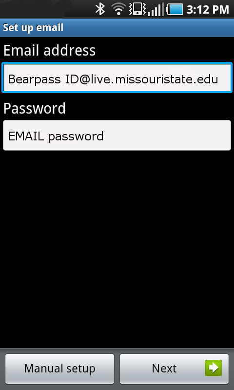
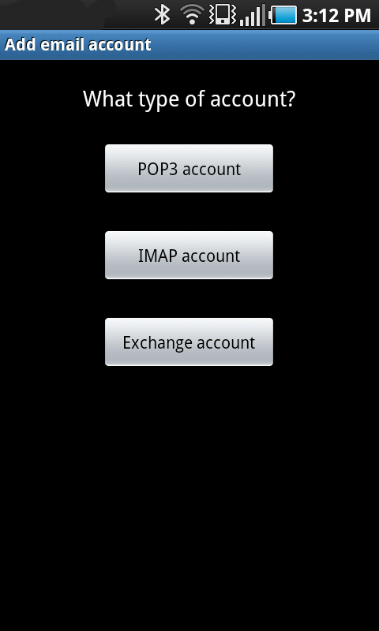
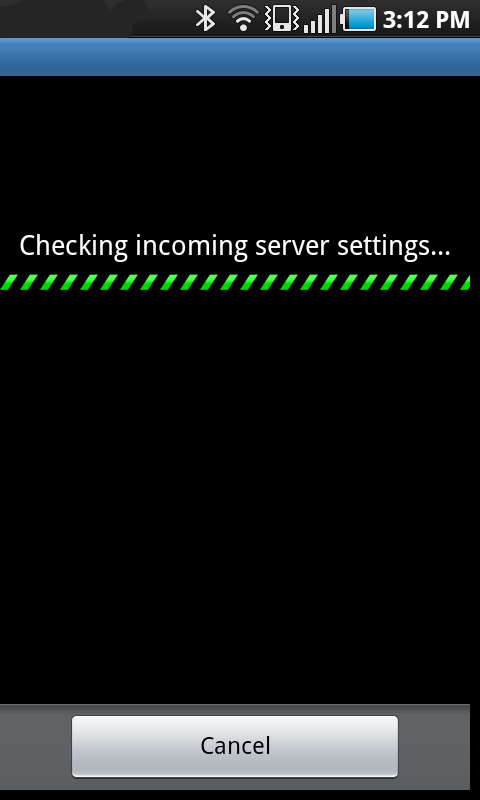
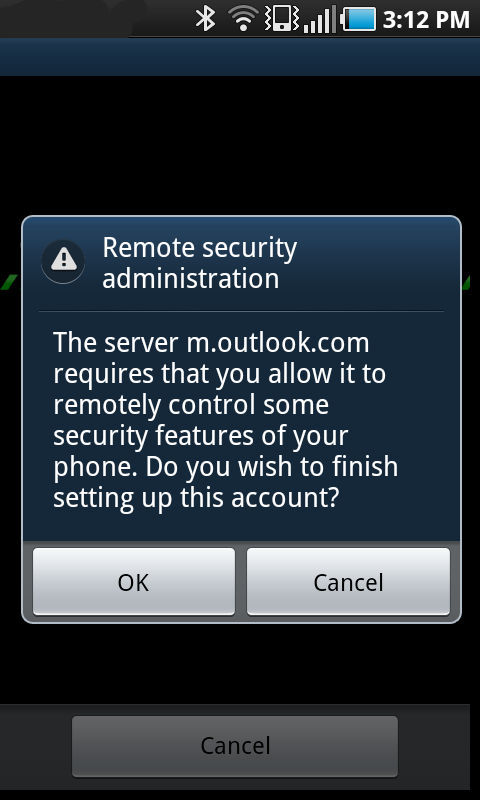
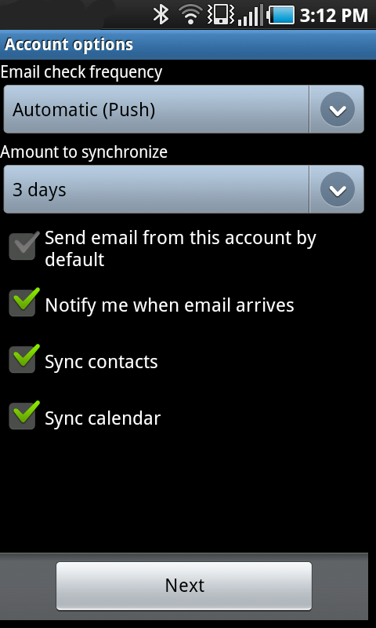

Android Mail Setup
- Before you begin setting up Outlook, you should ensure you are using the correct password. Open up an Internet browser and go to Outlook.com
For your Windows Live ID, enter your BearPass Login followed by @live.missouristate.edu
For your Password, enter your Live@EDU E-mail password. If it does not work, you may need to change your password at cams.missouristate.edu

- Select the E-mail icon from the application drawer.
- In the E-mail address field, enter your Bearpass ID followed by @live.missouristate.edu
- For your password, enter your E-mail password, then select "Manual Setup". Note: Your password may be different than the password you use to log into the labs.

- Select "Exchange account"

- The following screen should appear as your phone checks the settings.

- Enter the following information on the next screen:
Domain username: Your BearpassID @live.missouristate.edu
Password: Your E-mail password
Exchange server: m.outlook.com
Check both "Use secure connection (SSL)" and "Accept all SSL certificates"
- If you are prompted to give the server remote administration, select "OK"

- These next setting will vary depending upon your prefences. We recommend the following setings:
Email check frequency: Automatic (Push)
Amount to synchronize: 3 days
Check “Notify me when email arrives”, “Sync contacts”, and “Sync calendar”
Select "Next" when you have set these preferences.

- On the final screen, you can set a name for your Missouri State E-mail account. Your account is now set-up!